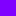

<!DOCTYPE html>
<html lang="ja">
  <head>
    <meta charset="UTF-8">
    <meta name="viewport" content="width=device-width">
    <title>.registerLanguage() | highlight.js - にほんご。</title>
    <meta http-equiv="X-UA-Compatible" content="IE=edge">
    <link rel="icon" href="http://tr.you84815.space/highlightjs/favicon.ico">
    <link href="https://fonts.googleapis.com/icon?family=Material+Icons" rel="stylesheet">
    <link href="https://fonts.googleapis.com/css?family=Roboto+Mono" rel="stylesheet">
    <link rel="stylesheet" href="../css/fx.css">
    <link rel="stylesheet" href="../css/base.css">
    <link rel="stylesheet" href="../css/main.css">
    <script>
      (function(i,s,o,g,r,a,m){i['GoogleAnalyticsObject']=r;i[r]=i[r]||function(){
      (i[r].q=i[r].q||[]).push(arguments)},i[r].l=1*new Date();a=s.createElement(o),
      m=s.getElementsByTagName(o)[0];a.async=1;a.src=g;m.parentNode.insertBefore(a,m)
      })(window,document,'script','https://www.google-analytics.com/analytics.js','ga');
      
      ga('create', 'UA-106478577-1', 'auto');
      //ga('send', 'pageview');
    </script>
    <script src="../js/highlight.pack.js"></script>
    <script src="../js/barba.min.js"></script>
    <script src="../js/base.js"></script>
  </head>
</html>
<body>
  <header>
    <div class="icon"><a class="no-barba" href="http://tr.you84815.space/"></a></div>
    <div class="navi_toggle" onclick="toggleMenu()"><i class="menu-icon material-icons" id="navi_icon"></i></div>
    <div class="title">highlight.js - <a class="no-barba" href="http://tr.you84815.space/">にほんご。</a></div>
  </header>
  <script>
    toggleMenu = function() {
      let navi = document.getElementsByClassName("navi");
      navi[0].classList.toggle('show');
      let navi_icon = document.getElementById("navi_icon");
      navi_icon.classList.toggle('active');
    }
  </script>
  <div class="wrapper">
    <div class="navi">
      <ul class="menu">
        <li><a class="index" href="../index.html">Home</a></li>
        <li><a class="getting-started" href="../getting-started.html">Getting Started</a></li>
        <li><span onclick="toggleApi()">Library API</span>
          <ul id="navi_api">
            <li><a href="../api/highlight.html">.highlight()</a></li>
            <li><a href="../api/highlight-auto.html">.highlightAuto()</a></li>
            <li><a href="../api/fix-markup.html">.fixMarkup()</a></li>
            <li><a href="../api/highlight-block.html">.highlightBlock()</a></li>
            <li><a href="../api/configure.html">.configure()</a></li>
            <li><a href="../api/init-highlighting.html">.initHighlighting()</a></li>
            <li><a href="../api/init-highlighting-onload.html">.initHighlightingOnLoad()</a></li>
            <li><a class="active" href="../api/register-language.html">.registerLanguage()</a></li>
            <li><a href="../api/list-languages.html">.listLanguages()</a></li>
            <li><a href="../api/get-language.html">.getLanguage()</a></li>
          </ul>
        </li>
        <li><a class="languageGuide" href="../language-guide.html">Language definition guide</a>
          <ul class="hidden" id="navi_languageGuide">
            <li><a href="../language-guide.html#highlighting-overview">ハイライトの概要</a></li>
            <li><a href="../language-guide.html#general-syntax">一般的な構文</a></li>
            <li><a href="../language-guide.html#keywords">キーワード</a></li>
            <li><a href="../language-guide.html#sub-modes">サブモード</a></li>
            <li><a href="../language-guide.html#comments">コメント</a></li>
            <li><a href="../language-guide.html#markup-generation">マークアップ</a></li>
            <li><a href="../language-guide.html#mode-attributes">モード属性</a></li>
            <li><a href="../language-guide.html#relevance">コードの関連性</a></li>
            <li><a href="../language-guide.html#illegal-symbols">不正シンボル</a></li>
            <li><a href="../language-guide.html#pre-defined-modes">定義済みのモードと正規表現</a></li>
          </ul>
        </li>
        <li><a class="reference" href="../reference.html">Mode reference</a>
          <ul class="hidden" id="navi_reference">
            <li><a href="../reference.html#types">各属性値の型</a>
            </li>
            <li><a href="../reference.html#attributes">属性</a>
              <ul>
                <li><a href="../reference.html#case_insensitive">case_insensitive</a></li>
                <li><a href="../reference.html#aliases">aliases</a></li>
                <li><a href="../reference.html#className">className</a></li>
                <li><a href="../reference.html#begin">begin</a></li>
                <li><a href="../reference.html#end">end</a></li>
                <li><a href="../reference.html#beginKeywords">beginKeywords</a></li>
                <li><a href="../reference.html#endsWithParent">endsWithParent</a></li>
                <li><a href="../reference.html#endsParent">endsParent</a></li>
                <li><a href="../reference.html#lexemes">lexemes</a></li>
                <li><a href="../reference.html#keywords">keywords</a></li>
                <li><a href="../reference.html#illegal">illegal</a></li>
                <li><a href="../reference.html#exclude">excludeBegin, excludeEnd</a></li>
                <li><a href="../reference.html#returnBegin">returnBegin</a></li>
                <li><a href="../reference.html#returnEnd">returnEnd</a></li>
                <li><a href="../reference.html#contains">contains</a></li>
                <li><a href="../reference.html#starts">starts</a></li>
                <li><a href="../reference.html#variants">variants</a></li>
                <li><a href="../reference.html#subLanguage">subLanguage</a></li>
                <li><a href="../reference.html#skip">skip</a></li>
              </ul>
            </li>
          </ul>
        </li>
        <li><span onclick="cssClassRef()">CSS classes reference</span>
          <ul class="hidden" id="navi_cssClassRef">
            <li><a href="../css-class-ref/stylable-class.html">指定可能なクラス</a></li>
            <li><a href="../css-class-ref/language-name.html">言語名とエイリアス</a></li>
          </ul>
        </li>
        <li><a class="styleGuide" href="../style-guide.html">Style guide</a>
          <ul class="hidden" id="navi_styleGuide">
            <li><a href="../style-guide.html#key-principle">基本的な方針</a></li>
            <li><a href="../style-guide.html#defining-a-theme">テーマの定義</a></li>
            <li><a href="../style-guide.html#typography-n-layout">タイポグラフィとレイアウトの注意事項</a></li>
            <li><a href="../style-guide.html#subst">.subst</a></li>
            <li><a href="../style-guide.html#contributing">コントリビュート</a></li>
          </ul>
        </li>
        <li><a class="languageCheckList" href="../language-check-list.html">Language contributor checklist</a>
          <ul class="hidden" id="navi_languageCheckList">
            <li><a href="../language-check-list.html#put-language-definition">1. 言語定義の.jsファイルを追加</a></li>
            <li><a href="../language-check-list.html#provide-meta-data">2. メタデータの挿入</a></li>
            <li><a href="../language-check-list.html#code-example">3. コード例の作成</a></li>
            <li><a href="../language-check-list.html#write-class-reference">4. クラスリファレンス作成</a></li>
            <li><a href="../language-check-list.html#add-yourself">5. AUTHORS.*.txtとCHANGES.mdの編集</a></li>
            <li><a href="../language-check-list.html#pull-request">6. プルリクエストを作成</a></li>
          </ul>
        </li>
        <li><a class="buildAndTest" href="../building-n-testing.html">Building and testing</a>
          <ul class="hidden" id="navi_buildAndTest">
            <li><a href="../building-n-testing.html#building">ビルド</a></li>
            <li><a href="../building-n-testing.html#basic-testing">基本テスト</a></li>
            <li><a href="../building-n-testing.html#testing-markup">マークアップテスト</a></li>
          </ul>
        </li>
        <li><a class="releaseProcess" href="../release-process.html">Release process</a></li>
        <li><a class="lineNumbers" href="../line-numbers.html">Line numbers</a></li>
        <li><a class="newLanguages" href="../new-languages.html">On requesting new languages</a></li>
        <li><a class="other" href="../other.html">Other</a></li>
      </ul>
      <script>
        toggleApi = function() {
          let elem = document.getElementById('navi_api');
          elem.classList.toggle('hidden');
        }
        cssClassRef = function() {
          let elem = document.getElementById('navi_cssClassRef');
          elem.classList.toggle('hidden');
        }
      </script>
    </div>
    <div id="barba-wrapper">
      <div class="barba-container">
        <div class="main">
          <h1>.registerLanguage()</h1>
          <h3>registerLanguage(name, language)</h3>
          <p>
            ライブラリに指定した名前の言語を追加します。
            主に内部的に使用されます。
          </p>
          <ul>
            <li><code>name</code>: 登録する言語の名称。</li>
            <li><code>language</code>: 言語定義を示すオブジェクトを返す関数。
              この関数は<code>hljs</code>オブジェクトに渡され、その中で定義された共通の正規表現を使うことができます。
            </li>
          </ul><br>
          <h3>デモ</h3>
          <p>'myshell'という言語を追加し、言語名を表示します。</p>
          <p>追加言語 : <span id="lang"></span></p>
          <pre>
            <div class="myshell" id="demo1">$ cd ~
$ ls -la
$ mkdir hoge
            </div></pre>
          <h4>JavaScript</h4>
          <pre><code class="js">// shellをベースにした関数
var language = function(hljs) {
  return {
    aliases: ['myshell'],
    contains: [
      {
        className: 'meta',
        begin: '$',
      }
    ]
  }
};
hljs.registerLanguage('myshell', language); // myshellという言語を追加
var langArr = hljs.listLanguages();
document.getElementById('lang').innerHTML = langArr[langArr.length-1];
 
var node = document.getElementById('demo1');
hljs.highlightBlock(node);</code></pre>
          <h4>HTML</h4>
          <pre><code class="html">&#x3C;p&#x3E;追加言語 : &#x3C;span id=&#x22;lang&#x22;&#x3E;myshell&#x3C;/span&#x3E;&#x3C;/p&#x3E;
&#x3C;pre&#x3E;
  &#x3C;div class=&#x22;myshell&#x22; id=&#x22;demo1&#x22;&#x3E;
    $ cd ~
    $ ls -la
    $ mkdir hoge
  &#x3C;/div&#x3E;
&#x3C;/pre&#x3E;</code></pre>
          <script class="load">
            createObj = function() {
              var hljsDemo = hljs;
            
              if (document.getElementById('demo1')) {
                // shellをベースにした関数
                var language = function(hljs) {
                  return {
                    aliases: ['myshell'],
                    contains: [
                      {
                        className: 'meta',
                        begin: '$',
                      }
                    ]
                  }
                };
                hljsDemo.registerLanguage('myshell', language);
                var langArr = hljsDemo.listLanguages();
                document.getElementById('lang').innerHTML = langArr[langArr.length-1];
            
                var node = document.getElementById('demo1');
                hljsDemo.highlightBlock(node);
              }
            };
          </script>
          <div class="license">
            <p>
              &copy; 2006
               Highlight.js is released under the BSD License. See <a href="https://github.com/isagalaev/highlight.js/blob/master/LICENSE">LICENSE</a> file for details.
            </p>
            <p>このコンテンツは<a href="http://highlightjs.readthedocs.io/en/latest/">highlightjsドキュメント</a>を翻訳/改変したものです。</p>
          </div>
        </div>
      </div>
    </div>
  </div>
  <footer><span>
       &copy; 
      <script>document.write((new Date()).getFullYear());</script> tobijibu</span></footer>
  <script src="../js/main.js"></script>
  <script src="../js/barba_common.js"></script>
</body>